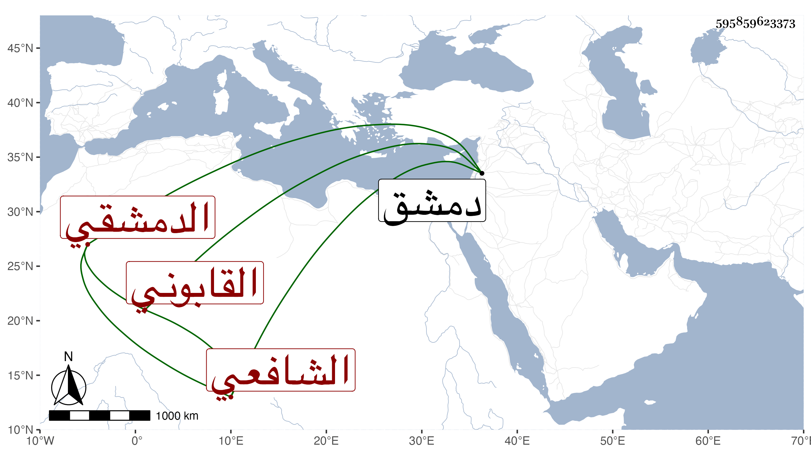

0902Sakhawi.DawLamic.ITO20230111-ara1.EIS1600.595859623373
Biography ID: 595859623373
267
جبريل بن علي بن محمد القابوني ثم الدمشقي الشافعي . سمع على البرهان إبراهيم بن جماعة الأدب المفرد للبخاري وعلى الكمال بن النحاس والبدر حسن بن محمد البعلي واسمعيل بن إبراهيم بن مروان وجماعة وحدث سمع منه الفضلاء أجاز لي وكان ثقة صالحا خيرا مديما للتلاوة . مات بدمشق في المحرم سنة خمس وخمسين وقد جاز المائة رحمه الله .
